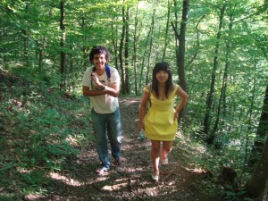
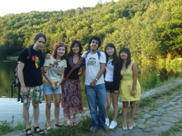
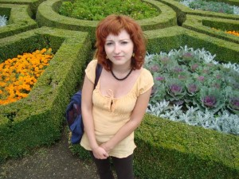

Tak nám odjela poslední kamarádka z první a nejlepší Erasmácké party – Mendy :_(. Bude nám chybět hlavně proto, že jako jediná z našich Erasmus kamarádů se za ten rok strávený v Brně naučila velice dobře česky. Bude se mi moc stýskat po jejím „Mám otázku!“ a „Dóbře“ :-)… Přináším zde alespoň krátký report z naší poslední společné akce – výletu do Mariánského údolí. Přes počáteční organizační komplikace jsme se v počtu šesti kusů úspěšně dopravili autobusem až na konečnou – do vyhlášené brněnské rekreační zóny :-). Zde jsme si užili příjemný kešovací podvečer (byli jsme tentokrát v hledání stoprocentně úspěšní, k veliké radosti nás i Erasmáků :D) a překonávali jsme se ctí nepříznivý terén navzdory nevhodné obuvi většiny účastníků :D. Když jsme se celí promrzlí a vyhladovělí vrátili zpátky na zastávku, rozhodli jsme se završit příjemný den v nějaké dobré hospůdce a pořádně se nadlábnout. Vzali jsme proto Erasmáky do stejkáče Pod lékárnou a nacpali je i sebe žebrama :-). Výlet jsme zakončili srdceryvným loučením na zastávce před výstavištěm. Tak ahoooj na Taiwanu :-)!!!
A teď trocha fotodokumentace. Většina fotek byla bohužel rozmazaná nebo jinak nekvalitní, ale jde přece o ty zážitky, že :-)!
Vydáváme se za první keškou...Mendy a Hyemin se drápou do kopce :)Luiz a HanweiA jedna skupinová :-)
A úplně nazávěr bych pro vás měla video, které Mendy natočila o svém pobytu v Brně. Je moc vydařené, tak na něj určitě mrkněte :-)!
Přestože nám počasí úplně nepřálo, podnikali jsme po celý týden spoustu výletů – například mě Péťa konečně vzal na dvě významné poutní hory v okolí – Svatou a Makovou, kde jsem měla za úkol najít jeho kešku…a uspěla jsem :-)!
Na Makové hoře
Nebyla jsem ušetřena ani cyklistiky, takže jsem si – zhýčkaná hanáckou rovinkou – dala pěkně do těla :D!
Samozřejmě jsme i z Příbrami odjížděli díky všudypřítomnému jídlu těžší o několik kilo :D…
Z kešování u Pilského rybníka jsme se vrátili s poněkud kuriozní historkou :D…keška byla zrakům okolojdoucích skryta skutečně dokonale…dokonce tak dokonale, že si místo jejího úkrytu (sympatický keříček) vybral nějaký turista k vykonání své potřeby, ehm 8-). Tohoto faktu jsme si bohužel povšimli teprve ve chvíli, kdy jsme na ono inkriminované místo neopatrně položili krabici s keškou :D…Z tohoto příběhu plyne prosté ponaučení: Nosit na geokešing antibakteriální gel je skutečně k nezaplacení :D!
Jeden z vůbec nejkrásnějších zážitků jsem si odnesla z památníku Karla Čapka na Strži ve Staré Huti, kde jsme strávili příjemné deštivé poledne a o kterém se tu snad ještě více rozepíšu v jiném příspěvku :-).
Janie a květiny, co vypadají jako hlávky zelí :D
Na chalupě jsme si zahráli na zahradníky a střihoruké Edwardy a křovinořezem jsme trochu oholili sousedovic křoví zasahující nám do ping-pongového stolu :D…a pak jsme se utkali ve strhujícím souboji :D!
Jestřáb a růže :-)
Kešovali jsme jako o život! Péťa se nezalekl dokonce ani lezení po stromech,brodění se v ledové vodě či kešování u tajemného Čertova lože!
Byla jsem konečně představena Péťovému dědovi, u kterého jsme strávili prima odpoledne. A nabídnul mi tykání :D!
Letošní prázdninové toulání bylo úspěšně zahájeno :-)! A to pěkně zostra, výšlapem přes Pálavské kopce. Pro mě to byla trochu retro výprava, neb jsem mohla cestou zavzpomínat na naši dámskou jízdu 2009…chyběl mi jen ten burčák na rozehřátí, leč na ten si bohužel budeme muset ještě nějaký ten pátek počkat ;-)…
Výpravu jsme naplánovali na středu, protože předpověď počasí pro tento den vypadala velmi příznivě. Abychom si mohli trochu přispat, rozhodli jsme se vyrazit do Mikulova až po desáté, ikdyž jsme tím pádem museli jet courákem vymetajícím všechny jihomoravské dědiny a cesta nám tak zabrala asi hodinu a půl :D. Naštěstí jsme se měli čím zabavit – první část cesty nás plně zaměstnávala obložená bageta, v té druhé jsme si listovali v květnovém čísle Respektu, které jsem si za celé zkouškové neměla čas přečíst. Před polednem jsme už konečně stáli v Mikulově a mohli jsme se rovnou vydat na túru.
Výhled na Mikulov z Kozího hrádku
První krátkou zástávku jsme udělali na Kozím hrádku, abychom nafotili pár snímků a pokochali se krásným výhledem, a brzy jsme pokračovali v cestě okolo židovského hřbitova směrem na Turold. U jeskyní na Turoldu nás čekala první keška. Museli jsme si kvůli ní kousek zajít a nakonec jsme ji stejně nenašli, protože byla ukrytá někde ve stráni a terén vypadal poněkud nebezpečně, ale aspoň jsme si prohlédli geopark. Pak jsme se vrátili zpátky k rozcestí a už jsme se pěkně drželi červené značky.
Výhled na Svatý Kopeček z Kočičí skály
Už při prvním stoupání jsem zalitovala, že jsem si s sebou nevzala plavky, protože sluníčko opravdu vydatně peklo. Nicméně výhodou výletu veprostřed pracovního týdne bylo to, že jsme za celou dobu téměř nepotkali živáčka. Tím pádem nás sice neměl kdo vyfotit, ale na druhou stranu jsem mohla po cestě společně se studem odložit i triko :D…
Vinice kam se podíváš
Další keška nás měla čekat na Kočičí skále. Vyšplhali jsme se až nahoru a dokonce i našli přesné místo (respektive díru), kde měla být ukrytá, jenomže keška nikde :O…Zjistili jsme, že ani lovec před námi ji nenašel, takže jsme usoudili, že je zbytečné po ní pátrat. Okolí Kočičí skály je nesmírně fotogenické – všude okolo jen pole a vinice a jako bonus krásný výhled do kraje – obzvlášť při tak nádherném počasí, jaké se vydařilo nám. Pořídili jsme tu ještě několik fotek, usoudili, že jsme se tu už dost zdrželi a vyrazili dál, protože nás čekala ještě dlouhá cesta.
Dlouhá cesta před námi
Dál naše kroky směřovaly přes Tabulovou horu k Sirotčímu hrádku. Doufali jsme, že zde konečně prolomíme naši keškovou smůlu. Vyšplhali jsme se až nahoru a opět našli naprosto evidentní místo, ale kde nic tu nic…Nakonec jsme to už chtěli vzdát a pokračovat v cestě, takže jsme sešli zpátky dolů k tabuli naučné stezky. Chtěla jsem si ještě přečíst pověst o Sirotčím hrádku, a tak Péťa řekl, že se zatím půjde porozhlédnout okolo. Myslela jsem, že tím naznačil, že jde napřed, takže když jsem si dočetla tabuli, vydala jsem se úplně automaticky po červené dál. Už jsem došla docela daleko a Péťa pořád nikde, což mi začalo být podezřelé. Doběhla jsem až k poli, kde byl vidět dlouhý kus cesty dopředu, a když jsem ani tam Péťu nezahlédla,usoudila jsem, že jsme se asi špatně pochopili a rozhodla se vrátit zpátky k Sirotčímu hrádku. Abyste rozuměli, byla jsem bez mobilu, bez pití, zkrátka úplně bez ničeho, protože všechny naše věci měl Péťa na zádech v batohu. Vůbec jsem nevěděla, jak bych ho hledala, kdyby u Sirotčího hrádku nebyl. Přiběhla jsem zpátky k místu, kde jsme se viděli naposledy, celá uřícená a vystrašená. To už jsem naštěstí slyšela Péťovo hvízdání. I jemu bylo podezřelé, že jsem se tak náhle vypařila – zůstal totiž jen pár metrů ode mě a ve zřícenině hrádku hledal onu kešku. Právě na mě volal, aby mi řekl, že ji konečně objevil :-). Ze svého nálezu jsme byli oba velmi šťastní :D! Za chvíli jsme už opět mohli pokračovat v cestě…
Po krátkém sestupu z tabulové hory jsme se ocitli v malebné vesničce, kde nás místní rozhlas oblažil skočnou dechovkou, a vzápětí jsme si poskočili i my, neboť se před námi vyloupla sympatická hospoda se zahrádkou. Protože nám u Sirotčího hrádku došlo pití, přivítali jsme tento fakt s povděkem a hned jsme se usadili a dali si pívo a kofolu. Čas pokročil a čekala nás ještě dlouhá cesta přes poslední pálavský kopec, proto jsme rychle doplnili tekutiny a vydali se směrem dál po červené.
Poslední úsek cesty už nebyl nijak zvlášť zajímavý, šli jsme převážně lesem a stoupání už nebylo tak vražedné jako předtím, ale docela se to vleklo. Kolem šesté hodiny jsme konečně vystoupali k poslednímu cíli naší cesty – Dívčím hradům, odkud se nám naskytnul nádherný výhled na Nové Mlýny (vizte foto )…
Pohled na Nové Mlýny
No a to už byl nejvyšší čas vydat se do Dolních Věstonic, odkud nám jel autobus, který nás měl přiblížit Brnu. Však už mě taky pěkně bolely nohy :D! Čas do příjezdu busu jsme si ukrátili ve stejné knajpě, jako před dvěma rokama s holkama, ale už tam neměli na zdi tu pěknou reklamu na Tuzemák :D…
Jestřábovi na Kočičí skále :)
P.S. Malým nedopatřením nám z výletu zůstaly 2 necvaknuté jízdenky na 4 zóny :D…takže kam se pojede příště o:-)?
Šedivých zimních dnů ubylo, sníh nám (už snad definitivně) roztál, a tak to vypadá, že k nám konečně zase přichází jaro a s ním i počasí přející výletům! O víkendu jsme tedy s Péťou podnikli první malý jarní výlet na Slovensko – volba padla na Bratislavu, protože tam ani jeden z nás ještě nikdy nebyl a navíc je to z Brna opravdu kousíček. Ještě teď nemůžu chodit, ale ta spousta zážitků za to určitě stála :-)!
Na cestu jsme se vydali v sobotu ráno a díky uhánějícímu ECčku jsme už za hodinu a půl stáli na bratislavském nádraží. Sluníčko na obloze slibovalo hezký den a sotva jsme se trochu zorientovali, vyrazili jsme do centra hledat náš hostel, abychom se mohli ubytovat a hned se vydat obhlídnout město. Docela mě překvapilo, jak je ve slovenské metropoli v sobotu ráno mrtvo :D. Hostel se nám podařilo nalézt celkem bez obtíží, nachází se v těsné blízkosti prezidentského paláce. Když jsme ale vstoupili dovnitř budovy, vypadalo to, že nejsme vůbec očekáváni 😀 – recepce totiž byla zamčená a nikde ani noha. Protože jsem organizací ubytování byla pověřena já, trochu mě polilo horko a začala jsem uvažovat, kde dnes budeme nocovat, pokud ubytování v hostelu krachne :D…Naštěstí jsme na dveřích objevili nápis s telefonním číslem, na kterém můžeme majitele hostelu v případě nepřítomnosti zastihnout, takže jsme mu poslali SMSku a během dvou minut nám zavolal, že už je na cestě do práce. Trochu se mi ulevilo, ale ne příliš udržované prostředí panelákové chodby ve mně moc důvěry zatím nevzbuzovalo – zvlášť když jsem si vzpomněla na krásné webové stránky hostelu, nad kterýma jsem se rozplývala a jásala, jak se mi povedlo sehnat báječné a levné ubytování :D. Naštěstí se vše brzy osvětlilo, když dorazil majitel – mladý týpek pomalu našeho věku, který nás očekával až v 11, jak jsem uvedla při rezervaci do mailu (nechala jsem nám časovou rezervu, protože jsem si nebyla jistá, jak rychle se nám podaří hostel najít). To ale samozřejmě nic nemění na faktu, že na webových stránkách měli uvedeno, že recepce je otevřená od 8 do 18ti hodin 😎 …Náš pokoj tedy ještě nebyl uklizený a ubytovat jsme se zatím nemohli. Když nám ale týpek sdělil, že během půl hodiny bude vše připraveno a můžeme zatím počkat v útulném prostředí recepce a využít počítače s internetem, vzali jsme ho na milost 😎 . Volný čas jsme alespoň využili k tomu, že jsme si naplánovali trasu, kterou zvolíme pro obhlídku města, a stáhneme si informace o keškách, na které jsme měli políčeno.
Sotva jsme měli hotovo, už tu byl týpek s tím, že se můžeme jít ubytovat. Ukořistili jsme ještě na recepci mapku a nechali si v ní vyznačit zajímavá místa a dobré restaurace a šli se podívat do našeho pokojíčku v prvním patře. Ten mě zase prozměnu příjemně překvapil svou útulností a vybavením včetně televize, wi-fi nebo varné konvice i s několika druhy čaje. Teď už bylo jisté, že máme dnes večer kde hlavu složit a dokonce to bude ve velmi příjemném prostředí, a tak už jsem se celá šťastná nemohla dočkat, až vyrazíme ven.
Jako první vedly naše kroky k prezidentskému paláci, který se nacházel od našeho hostelu coby kamenem. K paláci patří i nádherný park, kam jsme si šli ulovit první bratislavskou kešku :-)! Zajímavostí tohoto parku je prezidentská alej, která vznikla za vlády prezidenta Schustera a tvoří ji stromy zasazené hlavami států různých zemí – mimo jiné je tu k vidění také strom zasazený našim bývalým prezidentem Havlem.
Před Prezidentským palácem
S první odlovenou keškou jsme pokračovali do poněkud méně malebné části Bratislavy a cestou jsme míjeli například děsivě obrovskou a děsivě zanedbanou fontánu, která vypadala, že dobře pamatuje minulý režim, nebo chemickou fakultu, u které nás zaujala vtipná Mendělejevova socha s periodickou soustavou prvků :-).
Mendělejev a bývalý chemik :)
Během prvního dne jsme velice rychle zjistili, že centrum Bratislavy je vpodstatě strašně maličké a všude je to blízko. Všechny důležité památky jsou od sebe vzdálené většinou jen pár minut chůze. Proto jsme se při kešování neustále motali v centru a ikdyž jsme měli dojem, že jsme nachodili spoustu mil, nevzdálili jsme se od hostelu víc než na půl hodinky cesty. Bratislava jako město na mě zapůsobila dost rozporuplně – na jednu stranu tu člověk narazí na nádherné a zajímavé stavby, zejména v historickém centru, na druhou stranu ale může zabloudit i do míst, která působí dost zanedbaně a neudržovaně, prostě tak nějak průmyslově a socialisticky. Když pak takové dvě kontrastní budovy stojí vedle sebe, člověk z toho má dost rozpačitý dojem. Historické centrum je ale opravdu velice hezké a upravené a navíc nabízí i zajímavou kuriozitu v podobě několika vtipných soch rozmístěných v uličkách Starého Města :-)…
Péťa a Napoleonský voják :)Lehárko na Hlavním náměstíŠvihák ;)Péťa a Čumil :)
Krom těchto bratislavských kuriozit jsme samozřejmě viděli i řadu klasických památek, jako Slovenské národní divadlo, Michalskou bránu a vedle ní nejužší bratislavský dům, který měří v průčelí jen 130 cm :O…Na dlažbě pod Michalskou bránou nás pak ještě zaujal kompas se zakreslenými světovými metropolemi, a tak jsme pro naši kamarádku Phyllis vyfotili, jak daleko to máme z Bratislavy do Hong Kongu :))…
Mooooooc daleko :)!Asi taaaaakhle!
V sobotu jsme centrum prolezli jen tak zlehka s tím, že na druhý den si ho ještě dosyta užijeme, a vpodvečer jsme se vydali na procházku po nábřeží, dokud nám sluníčko přálo. Na břehu Dunaje mi znovu došlo, jak kontrastní město Bratislava je. Protože z mého pohledu nám tady slovenská metropole ukázala svou nejkrásnější tvář :-)…
Dunaj a my
Na nábřeží a řeky jsem tak trochu ujetá (o řece Moravě jsem psala i maturitní slohovku :D), ale ospalé sluníčko ten den vylákalo k Dunaji spoustu lidí, což mě jen utvrdilo v tom, že se skutečně nacházíme na jednom z nejkrásnějších míst v Bratislavě a nejsem až tak moc zaujatá :D. Při této procházce si nešlo nepovšimnout rozsáhlého komplexu budov, který se táhne téměř po celé délce břehu mezi starým a novým mostem. Zpočátku jsem si myslela, že se v něm nachází jen nějaké kavárny a restaurace, ale když jsme došli blíž, zjistili jsme, že se jedná o obří nákupní galerii na způsob naší brněnské Vaňkovky, ale mnohem větší, hezčí a luxusnější. Docela se nám hodila do krámu, protože u řeky dosti přituhlo, a za touhou podívat se dovnitř honosného obchoďáku Eurovea jsem skrývala skromné přání pořádně se ohřát :D. Nebyla jsem zklamána, Eurovea byla krásně přetopená přesně podle mého gusta :D! Protože sluníčko už začalo zapadat, rychle jsme vyrobili několik posledních romantických fotek s Dunajem, a vypravili jsme se pro kešku k novému mostu.
Trocha romantiky o:-)
Při lovu jsme byli úspěšní a to i přesto, že jsme si popletli hinty a hledali jsme podle špatné nápovědy 😀 – prolomili jsme tak naši smůlu mostových kešek a mohli jsme se šťastní a ztuhlí zimou vydat domů. Cestou jsme se ještě stavili v Eurovee pro vínečko, brambůrky a olivy na večer a nakonec jsme zapadli do jedné stylové hospůdky na náměstí Slovenského národního povstání, kterou nám doporučil týpek z hostelu, a pořádně se tam nadlábli :-). To už jsme přecejen začali pociťovat únavu a bolavé nožky, takže není divu, že jsme záhy po příchodu na pokoj odpadli na postel. Nakopla nás jenom vidina vínečka, po kterém se nám spalo ještě líp :-)!
Na druhý den jsme se pěkně odpočatí vydali prozkoumat pravděpodobně nejznámější bratislavskou památku – místní hrad. Dovnitř se budeme muset podívat někdy příště, protože na hradě právě probíhá rozsáhlá rekonstrukce, ale výhled na město byl nádherný.
My a hrad :)
V parku pod hradem se nám málem podařilo ztratit 😀 – chvíli nám trvalo, než jsme narazili na tu správnou cestičku, která by nás zavedla k zámeckým schodům vedoucím do centra. Nakonec se nám ale podařilo najít ten správný chodník a vylezli jsme přímo u mostu s „UFEM“ :D. Na něm se skrývala další keška a přestože byla „mostová“, našli jsme ji celkem hravě :-). Při procházce po nábřeží nám už celkem vyhládlo, a tak jsme se rozhodli vrátit do centra a navštívit další z doporučených podniků a naobědvat se. Obě dvě restaurace, které jsme v Bratislavě navštívili, byly obrovské a stylově zařízené. První vítězila interiérem – vypadalo to, že se jedná o nějaký přebudovaný kulturák s bárem přímo pod pódiem. Co se ale týče jídla, suverénně zvítězila Slovak pub na Obchodné ulici. Dali jsme si stylově bryndzové halušky a během minuty se po nich doslova zaprášilo 😀 – mno, mám ještě v kuchyni co zdokonalovat :D!
Co dodat - dobrota :)!
Takto posilněni jsme se opět vydali zkoumat malebné uličky bratislavského centra a posbírat při té příležitosti několik kešek. Díky kešování jsme objevili další zajímavou místní kuriozitu – zvonkohru – devět „dlaždiček“, které po došlápnutí hrály :D! Tahle atrakce fascinovala hlavně děti a byli jsme svědky toho, že už způsobila nejedno rozbité koleno :D. Solidárně jsem si taky trochu zafňukala, protože jsem chytla křeč do nohy :D. Naše další kroky vedly na Františkánské náměstí, jehož zajímavost se rovněž nachází na dlažbě – jedná se o několik dlaždiček ozdobených všemožnými obrázky – například ústy Franka Sinatry, hehe :D. Čas se pomalu nachýlil, a protože jsme chtěli stihnout vlak v 6 hodin, vydali jsme se za poslední zajímavou bratislavskou památkou – secesním Modrým kostelíkem. Je skutečně modrý od hlavy až k patě (včetně střechy), a protože jsme nakoukli i dovnitř, můžeme potvrdit, že má dokonce i modré lavice :)!!! Vypadá zkrátka jako vyloupnutý z nějaké pohádky :-)…
Modrá je dobrá :)
Tato optimistická modrá tečka byla příjemným završením našeho výletu do Bratislavy a navzdory bolavé noze a vlaku nacpanému k prasknutí jsem byla šťastná, že se nám to takhle pěkně vyvedlo – včetně počasí :-). Bratislava je rozhodně město, které stojí za vidění, a protože jsme už nestihli plánovaný výlet na Děvínský hrad, určitě se sem ještě někdy vrátíme. Do té doby budeme alespoň vzpomínat na tenhle příjemný březnový víkend :-)…
Už dlouho se tu na blogu neobjevil žádný příspěvek do rubriky „Toulky“, přitom se teď toulám víc než dost, jen to nějak nestíhám zaznamenávat :-)…Krom toho se také poslední dobou snažím oprašovat znalosti angličtiny utužováním přátelství s několika studenty, kteří byli natolik odvážní, že vyrazili do České republiky na Erasmus :-). Po několika vařících sessions, kde jsme se lépe poznali, jsme se s Péťou rozhodli uspořádat pro ně víkendový výlet, abychom jim ukázali i méně známá brněnská zákoutí. Organizací jsem byla tentokrát pověřena já, a tak jsem si dala záležet, abych se blýskla 😀 !
Pátrání po kešce...vypadáme jak Správná pětka, co :D
Nakonec jsem zvolila poměrně nenáročnou výpravu na zříceninu Obřanského hradu a Hádeckou planinku, Péťa naplánoval kešky a mohlo se vyrazit. Jednoho sobotního dopoledne jsme se tedy všichni šťastně potkali u hlaváku a vydali se vstříc dobrodružství :-). Výletu se krom nás dvou účastnili také Žánek, Péťa Krásný a naše erasmácké kamarádky Phyllis, Julia a Mandy. Ty jsme během čekání na Péťu naučily česky pozdrav „AHOJ KRÁSNY KLUK“, takže hned z kraje bylo o zábavu postaráno :D…
Nejprve jsme se museli přemístit šalinou až do Obřan na konečnou. Tam jsme si ještě v civilizaci odlovili jednu kešku u jakési bývalé fabriky a pak se vydali po břehu Svitavy vzhůru do přírody. První naší zajímavější zastávkou byla keška skrytá v…no, nemůžu samozřejmě prozrazovat, kde byla skrytá, ale fotky asi hovoří za vše :D…
Úspěšný lovec :)
Na takovéto tajuplné místo se odvážili skutečně jen ti nejsilnější lovci – Žánek s Péťou. My ostatní jsme na ně čekali venku, kde jsme se úspěšně zabavili pořizováním fotek (viz.výše) a vtipkováním na téma, jestli kluky ještě někdy uvidíme :-). Naštěstí všechno dobře dopadlo, kluci vylezli živí a zdraví, takže jsme Péťovi vytřepali imaginární brouky z dredů a mohlo se pokračovat dál. Následující keška nás zavedla k železniční trati. Dala nám docela zabrat, Julia se však ukázala jako přirozený talent na geocaching a nakonec ji objevila! Poté jsme se vydrápali na kopec nad tratí, kde jsme si vychutnali nádherný výhled a mohli se podívat, co nás ještě čeká. Malebné panorama Péťu inspiroval k recitaci připravené básně od S.K. Neumanna, kterému tato místa také kdysi sloužila jako studna inspirace při jeho tvorbě…
Po této poetické vložce jsme se vrátili dolů na asfaltku a pokračovali po ní, až dokud nás nedovedla na rozcestí. Před náročným výstupem k hradu jsme se rozhodli na chvíli usadit a posilnit se svačinkami a záhy jsme se vydali po modré strmou cestou vzhůru ke zřícenině Obřanského hradu. Z hradu toho moc nezbylo, stejně tak v historických pramenech údajně nejsou k nalezení významější informace, nicméně o tomto místě hodně napověděl archeologický průzkum. Hrad vznikl někdy okolo roku 1278, s tím že za jeho zakladatele je považován Gerhard z Obřan, který z hradu podnikal loupeživé útoky.
Společné foto na zřícenině Obřanského hradu
Hromady napadaného javorového listí jsme využili k podzimním radovánkám a poté, co jsme se dostatečně vyřádili tím, že jsme po sobě listí házeli případně se do něj navzájem zahrabávali :D, vydali jsme se odlovit další keš. Opět ji vypátrala úspěšná Julia. Mezitím jsme ale poněkud zapomněli na čas, a protože jsme byli sotva v polovině cesty, rozhodli jsme se zrychlit tempo, aby nás nezastihla v lese tma. Cesta od hradu nás dovedla až k vyhlídce Šumbera, která je součástí přírodní rezervace Hádecká planinka. Právě na této vyhlídce před časem sedával S.K. Neumann, který obdivoval zdejší výhled. Vápencový sráz, v nadmořské výšce 435 m.n.m. skýtal krásný výhled na údolí Svitavy a na obrysy Chřibů a Bílých Karpat. Dnes již stromy výhled zaclonily. Na místě alespoň stojí památník slavného básníka na němž stojí úryvek z jeho Knihy lesů, vod a strání, který nám Péťa ten den recitoval:
Na skalkách dnes vítr poskakoval
po bělošedivých balvanech
jarního rusáka březen koval
na Šumbeře nebo na Hádech…
To už jsme se ale pomalu blížili ke zlatému hřebu našeho výletu. Doufala jsem, že se nám podaří k němu dorazit ještě před západem slunce, protože Hády skýtají vůbec ten nejkrásnější pohled na Brno, jaký znám. Před pátou hodinou jsme míjeli vysílač a to už bylo jisté, že si nádherný výhled užijeme v romantických kulisách zapadajícího slunce. Holky byly nadšené a já znovu s nima. Dívat se na podvečerní Brno z výšky je nepopsatelné…
No a zazvonil nám zvonec…:-) Při zpáteční cestě kolem hospody nás napadlo, že si za takovou túru zasloužíme nějakou odměnu, a tak jsme se rozhodli, že se stavíme na jedno. Na naši exotickou výpravu však místní štamgasti koukali nějak podivně, takže skutečně u jednoho i zůstalo…Ukázalo se však, že žízeň je převlečený hlad 😀 a když nás Žánek nalákal na akční žebra v hospodě u Svoboďáku, neváhali jsme ani minutu. Abychom si cestu zpříjemnili, naučili jsme holky užitečnou frázi „NAŽEREM SE“ 😀 a pak už se nám jen sbíhaly sliny. Aby se sbíhaly i vám, neodpustím si dokumentární foto :D…
"Nažerem se 😀 !"
Výlet se skutečně vydařil do posledního puntíka a tato skvostná tečka na závěr je toho myslím jasným důkazem :-). O týden později jsme se rozhodli pro velký úspěch uspořádat pro erasmáky další zajímavý výlet, o tom ale zase někdy příště :-)…
V následujícím týdnu očekávám spoustu společenských akcí, a tak jsem si řekla, že bych se konečně měla dokopat k sepsání všech blogových restů, než se mi nakupí další :-)…Jako první jsem si vybrala možná ten úplně nejkrásnější a také nejpestřejší prázdninový týden, strávený v severní Itálii. Ano, chci se v tomhle pseudobabím létu zahřát alespoň fotkami a vzpomínkami O:-)…
Do Itálie jsem se chtěla podívat už z toho důvodu, že jsem se dva roky učila italštinu, a navíc můj čerstvě odpromovaný brašule získal práci v neurobiologickém vědeckém výzkumu v malebném severoitalském městečku s názvem Rovereto. Shodou okolností se letos do stejné oblasti chystala na dovolenou i Péťova rodina, takže jsme se rozhodli, že pár dnů strávíme s nimi u moře a pak pojedeme za bráchou do vnitrozemí. Tato volba se ukázala být tou nejlepší možnou, protože jsme si tak vychutnali všechno, co k správným prázdninám patří – ráchání v moři, kešování, trochu těch památek a taky nádhernou horskou přírodu.
Prvních pár dnů jsme tedy trávili v malém turistickém letovisku Rosolina Mare (možná si ho někdo bude pamatovat z letošních reprízovaných Her bez hranic ;)), kde jsme si dosyta užívali sluníčko, moře i výbornou italskou zmrzlinu O.-) ! Pro mě to byl první pobyt u moře po nějakých sedmi letech, takže jsem byla jaksepatří nadšená a cachtala jsem se ve vlnách jako malé dítě společně s modrým nafukovacím balónkem, který jsme překřtili na „Kulihráška“ :D.
Péťa honí Kulihráška :D
I přes mé nehrané nadšení ale rozhodně nepatřím k plážovým povalečům a mám na dovolené ráda i nějakou tu akci. Sotva jsme tedy prochodili městečko a odlovili všechny kešky, už jsme v Rosolinu neměli stání a těšili jsme se na další místa, která jsme měli v plánu navštívit. Zjistili jsme si tedy vlakové spoje a vydali jsme se na cestu za brašulou do Rovereta – s tím, že si ještě po cestě uděláme celodenní zastávku v Benátkách.
Benátky jsou opravdu nádherné a zajímavé město a stojí určitě za víc, než pouhý jeden den. My jsme ale bohužel neměli víc času a snažili jsme se navštívit zde jak ty klasické pamětihodnosti, tak i zapadlá místa, která běžný turista může opomenout. Z toho důvodu jsme si hned po příjezdu zakoupili mapku města, což byl, jak se později ukázalo, výborný nápad – bez ní bychom se ve spletitých benátských uličkách ztratili raz dva.
Hlavní turistické atrakce – Ponte di Rialto a Piazza San Marco – se nachází na trase, která je výborně značena na každém rohu. My jsme ale zatoužili i po benátských keškách a nějakém tom dobrodružství a musím říct, že jsme se dočkali ten den obojího :-). Jako první jsme se vydali hledat Snail tower (jak se to řekne italsky vážně netuším :D), trochu zchátralou, ale velice zajímavou a turistickým očím skrytou stavbu s točitým schodištěm. Když jsme se u ní dostatečně pokochali a vyfotili, pustili jsme se na výpravu po dalších místních keškách, kterou jsme měli zakončit u budovy vlakového nádraží.
Byli jsme ten den opravdu úspěšní (a to jindy míváme v geocachingu docela smůlu 😀 !) a obzvlášť já měla ten den na hledání čuch :D. První keš, u které jsme se zasekli, nám jako bonus přinesla i nové kamarády :-). U Ponte dell Accademia to zrovna moc nevonělo a jako na potvoru keš nikde. Pod mostem jsme ale narazili na jakéhosi mladíka a hned nám bylo jasné, že je to kolega. Ani on nebyl o moc úspěšnější, pod mostem prý objevil jen nějakou igelitku, do které si kdosi ukryl deštníky :D…Nahoře na mostě ho čekala a navigovala jeho přítelkyně, tak jsme se dali do řeči a dozvěděli jsme se, že mladý pár je z Belgie, objel velkou část Evropy a teď už se vrací domů. Při pohledu zhora se mi náhle rozbřesklo a zahlédla jsem černou krabičku – no, a keš byla na světě! Po tomto úspěchu jsme se rozhodli, že se vydáme po dalších keškách pátrat společně. Při našem putování se nám podařilo zahlédnout pravé a nefalšované benátské klišé – zpívajícího gondoliéra O:-) !!! Po dalších dvou keškách se ale naše cesty rozešly, popřáli jsme si s Belgičanama hodně štěstí a dál pokračovali sami…a vzápětí jsme se ztratili :D! Ani mapa nám tentokrát neposkytla vodítko, tak jsme se vrátili k jakémusi chrámu, kde se procházela místní policie, a nechali jsme si poradit :-). To už se nezadržitelně blížil čas odjezdu našeho vlaku do Verony. Na nádraží jsme byli zpočátku trochu zmatení, protože na tabuli se pořád ne a ne objevit náš spoj. Další neznámou pro nás byly jízdenky, které se musely označit ještě před nástupem do vlaku – jako u nás v šalině :-). Když jsme navíc konečně uviděli náš vláček – luxusní klimatizovaný vagón, který by si nezadal s našim pendolínem, říkali jsme si, že to bude asi nějaký omyl.
Vlak do Verony...dobrodružství začíná :-)
A ani tím dnešní dobrodružství ještě nekončilo. Ve Veroně jsme měli přestoupit na druhý spoj, který už nás měl dovézt až do Rovereta. Problém ovšem byl v tom, že na přestup jsme měli pouhých 8 minut a ještě ke všemu jsme vůbec nevěděli, jakou cílovou stanici ten vlak má mít, čili jakým směrem pojedeme…No, měli jsme z toho trochu nervy :D…Během cesty nás naštěstí uklidnil telefonát od brašule. Zjistil, že kdyby nám náhodou spoj ve Veroně ujel, brzo pojede další, a musíme nastoupit do vlaku mířícího na Bolzano. S těmito informacemi jsme byli hned klidnější a možná i proto jsme přestup ve Veroně bravurně zvládli v mnohem kratším časovém limitu, než jaký nám byl vyměřen. Po nástupu do správného spoje jsem pak poprvé za svůj život využila znalostí z kurzů italštiny a nejblíž sedící slečny jsem se konverzačně optala, zda skutečně jedeme na Rovereto. Slečna sice nevěděla, ale jakýsi mladík nám to potvrdil, a tak jsme s klidným srdcem usedli a nechali se unášet tmou za dalším dobrodružstvím :-).
Na roveretském nádraží jsme se šťastně shledali s bráchou a vydali se na cestu do našeho nového domova. Luk nám během cesty stačil sdělit všechny důležité informace o tom, kde si můžeme nakoupit, kam se máme jít najíst, kde pracuje on i co v Roveretu a blízkém okolí můžeme podniknout. Z jeho bytečku jsem byla jaksepatří nadšená, ale sotva jsem si ho stačila pořádně prohlédnout, dopadla na mě únava po dlouhém a náročném dni, a tak jsme to brzy zabalili a šli se pořádně vyspat na další dobrodružství :-)…
Na druhý den jsme se s Péťou hned vrhli na prohlídku Rovereta a první kešky :-). Teprve teď, za denního světla, jsme se mohli náležitě pokochat krásou malebného městečka obklopeného ze všech stran horami. Protože jsme se vykopali z postele až kolem poledne, sluníčko nás hned na uvítanou začalo pěkně připíkat, takže jsme se nejprve uchýlili do stínu místního Muzea umění, které se nachází hned vedle budovy Lukovy laboratoře.
V palmovém háji
V kešování jsme tentokrát moc úspěšní nebyli, tak jsme si šli spravit náladu alespoň báječnou zmrzlinou, kterou tu měli snad ještě lepší než v Rosolina Mare ! Usoudili jsme, že na nějaké velké procházení je teď moc velké hic, navíc ve všech obchodech siesta, a proto jsme se zastavili jen na informacích pro mapku města a jízdní řád do Rivo della Garda, kam jsme chtěli vyrazit hned následující den, a vydali se domů uklohnit si něco k jídlu.
Co se mi v Roveretu opravdu moc líbilo, byly malé fontánky nacházející se na každém rohu. V těch parných letních dnech to byl opravdu ten nejlepší možný zdroj osvěžení. Rozhodli jsme se inspirovat se Italy a po obědě jsme striktně dodrželi siestu :D…Když jsme se probudili :D, usoudili jsme, že je nejvyšší čas zase vyrazit za novými zážitky. Ukořistili jsme mapku, zásoby pití a vydali jsme se na cestu na Ossario di Castel Dante, kruhovitou stavbu tyčící se nad Roveretem, od které vedla naučná stezka ke zvonu Campana dei caduti, místní památce na druhou světovou válku. Každý panel naučné stezky byl věnován nějakému významnému mírovému aktivistovi. Kešování nás po cestě strašně zdrželo, a tak nás na stezce málem zastihla tma (což při průchodu lesíkem bez baterky nebylo zrovna dvakrát příjemné :D). Na druhou stranu se nám ale z výšky naskytl nádherný pohled na noční Rovereto.
Rovereto na dlani
Vrátili jsme se domů dost pozdě, takže jsme usoudili, že chladící se vínko, které jsme v poledne koupili za rohem v místním obchodě COOP (který brašule trefně překřtil na „Jednotu“ :DDD…), si necháme na zítra, a šli jsme čerpat síly na výlet k Lago di Garda :-)…
Druhého dne jsme se tedy vypravili na jedno z pravděpodobně nejkrásnějších míst na zeměkouli – italská karosa 😀 nás vyplivla v městečku Rivo dela Garda a my jsme se s GPSkou vydali najít ten slavný ráj na zemi. Palmičky lemující cestu k pláži nás ujistily v tom, že jsme tu správně :-). Pohled, který se nám naskytl na břehu jezera, vůbec není možné vyjádřit slovy. Na nebi azůro, průzračně čistá voda, do které háže sluníčko třpytivé odlesky a všude kolem zeleň a hory…
Lago di Garda - ráj na zemi o:)
Nemohla jsem se dočkat, až se v Lagu trochu ochladím. Plavky jsem si s sebou nebrala, ale k mému překvapení měla voda přes dvacet stupňů, takže jsem se šla ráchat do vlnek i v šatech a celou dobu se bavila sbíráním barevných kamínků (jeden červený jsem si odnesla, ale nakonec jsem ho na druhý den vložila do roveretské kešky :-)…). Díky příznivému větru je Lago rájem surfařů a díky nádherné krajině pravděpodobně i oblíbeným italským letoviskem, soudě podle zaplněné pláže.
Den u Laga jsme opět zaplnili kešováním, nakupováním pohledů a nakonec i nějakým tím občerstvením :-). Ochutnali jsme i místní zmrzlinu, ale ta roveretská byla suverénně nejlepší :D! Závěr výletu nám trošku zkazil náladu, protože jsme díky špatnému značení čekali na zpáteční bus na špatné straně ulice a díky tomu nám ujel doslova před nosem :(. Na další spoj jsme museli čekat hodinu. Naštěstí jsem byla vybavena Robertem Fulghumem, takže jsem to nebrala moc tragicky :-)…
V Roveretu jsme se šli ještě podívat k místnímu hradu, který se ale zrovna opravoval, a nafotili jsme cestou spoustu smínků spletitých uliček v historickém centru. Po cestě domů jsme pak narazili na koncert odehrávající se přímo na náměstí, tak jsme se rozhodli završit dnešní den i trochou kultury a dobrou hodinku jsme tam poseděli. Pak už jsme ale zamířili domů za Lukem a za vínkem a olivama 😀 ! Na balkónku jsme si udělali pěkné posezení a kecali až dokud nedošlo víno, ehm :D…
No a už tu byl najednou poslední den dovolené, konec našeho italského dobrodružství :(. Rozhodli jsme se, že ho strávíme procházkou k řece, a po cestě ulovíme posledních pár keškových exponátů a nakoupíme pohledy :).
Kolem řeky je vybudovaná skvělá cyklostezka, po které se dá údajně dojet až k Lagu. Sluníčko opět připalovalo, takže jsme byli vděční za každý stín, kterých po cestě pravda mnoho nebylo :-)…V poledne jsme si dali sraz s brašulou u hlavního náměstí, protože jsme byli domluvení, že si spolu zajdeme někam na oběd. Objednali jsme si jen tousty, ale byly tak obří a tak bohatě obložené, že se nedaly vůbec sníst…opět jsme nacpaní k prasknutí zatoužili po siestě :D. S brašulou jsme se pak už rozloučili, protože se vydal zpátky do práce, a šli jsme pomalu balit :-)…
Na závěr je nutné zmínit, že po celou dobu nám v Itálii ani jednou nezapršelo, ale sotva jsme se vydali na zpáteční cestu, přihnal se liják a vytrvale a hustě lilo celou dobu až domů. A u nás jsme pak ještě rádi vzpomínali na ta příšerná vedra 😀 !!! Prázdniny v Itálii se zkrátka po všech směrech vyvedly. Zažili jsme spoustu dobrodružství, odlovili spoustu kešek, podívali se na řadu zajímavých míst a užili si prostě to nejlepší, co ke správným prázdninám patří…a tak to má být !
Aby tady na blogísku konečně něco pořádného bylo, zahrabala jsem v útrobách počítače (na psaní něčeho nového a aktuálního momentálně v zápalu studia není moc času) a objevila opravdové retro 😀 – „palubní deník“ naší dámské jízdy po krásách jižních Čech, léta Páně 2007 :). Nechtělo se mi to po sobě popravděřečeno moc číst, tak doufám, že tam nebude moc gramatických ani stylistických chyb. Přeju příjemné počtení !!
Motto: „Správná cesta nemá konec, jen návrat…“ (Jan Jícha, guru naší dovolené ;-))
Sobota, den první
Naše první dovolená bez rodičů si hned odzačátku přivlastnila všechny katastrofické scénáře, jaké si jenom lze představit. Tři dny před odjezdem mi psala Monika, že má chřipku, Pavča,že nemá peníze a já jsem se popravdě taky potácela po domě s palestinou omotanou kolem krku a termoskou mátového čaje pod paží. Po každé náročnější společenské akci jsem totiž nevysvětlitelným způsobem přišla o hlas, v tom lepším případě mi pouze klesnul můj soprán o pár tónin dolů…:-) Byla to sice z těch všech tragédií ta nejmenší, leč přesto mě naplnila pochybnostmi, zda se do této akce vůbec pouštět, když už se nám to od začátku takhle pěkně…:-p. Na naší první dámskou jízdu jsem se ale těšila takovým způsobem, že teď – 3 dny před odjezdem prostě nešlo couvnout a vykašlat se na to. Vidina sladkého týdne stráveného bez jakéhokoliv dohledu daleko od domova a s partou těch nejlepších lidí, které jsem na gymplu poznala, byla mou největší motivací, když jsem se v dubnu učila k maturitě. Měla to být dovolená snů O:)…alespoň tak jsem si ji malovala nad chemickými rovnicemi a učebnicí latinské anatomie, které mi sice nakonec byly obě úplně k ničemu, protože jsem v září měla nastoupit na práva…ale to je jiná historie :). „Holičky“,jak jsme celou akci pracovně nazvaly, pro nás prostě ztělesňovaly událost tohoto nekonečně dlouhého léta a třeba i poslední možnost, jak strávit prázdniny v naší staré gymplácké sestavě. Naší výpravě měl dodat nádech dobrodružství fakt, že jsme se rozhodly vyrazit na aktivní dovolenou a vzít si s sebou kola (tímto bych chtěla pozdravit České dráhy 8-)…
Dnu D pochopitelně předcházely rozsáhlé přípravy. My s Terkou například 14 dnů brigádničily coby instruktorky na táboře v Jablůnce, abysme si každá vydělaly litr (který jsem byla stejně nucena vysolit, ještě než dovolená vůbec začala, za cyklistickou helmu). Zbytek poplatků pokryly peníze postupně vyžebrány od všech rodinných příslušníků a půlroční úspory, které jsem s těžkým srdcem vydolovala z útrob své pokladničky O:-).
Protože naše sestava byla čistě dámská, balení krosny se pro nás stalo velkou událostí a důvodem navíc, proč trávit po večerech na ICQ ještě více času než normálně – abychom si mohly vzájemně porovnat velikost i obsah našich zavazadel a poslat si seznamy, pečlivě naťukané do Wordu.
I přes prvotní komplikace jsme se nakonec toho nádherného srpnového rána všechny čtyři sešly na vlakovém nádraží v Kojetíně, odkud odjížděl náš rychlík Rožmberk, který nás měl dovést i s kolama až k cíli naší výpravy, do jižních Čech. Představa to byla krásná, ovšem realita poněkud krutá. Tak jednak nás málem vyhodili z vlaku i s kolama ještě v Kojetíně, neboť jsme pro naše bicykly neměly zakoupenou místenku…to nám paní u okýnka jaksi pozapomněla sdělit a prodala nám pro ně jenom 4 jízdenky, takže málem došlo na ten úplně nejhorší scénář a naše báječná dovolená by byla bývala skončila ještě dřív, než mohla vůbec začít. Po této zkušenosti jsem každopádně velebila do nebes České dráhy (pravděpodobně poprvé a naposledy za celý týden), neboť náš vlak měl zpoždění a musel se z kojetínského nádraží co nejdřív odlepit – jen díky tomu nás průvodčí nevyhodil i s kolama na tvrdý beton nástupiště. Po prvním průšvihu jsme si každopádně mohly gratulovat, ukecaly jsme to :)!
Vzápětí jsem se vydaly řešit druhý problém – najít si volné kupé s pohodlnými sedadly a úložným prostorem pro naše zavazadla…že jsme strávily plných 6 hodin jízdy v uličce u záchodků asi nikoho nepřekvapí 8), až do Českých Budějovic totiž zabíral většinu rychlíku porůznu roztroušený dětský tábor. Cestu nám navíc měla od Náměště „zpříjemňovat“ banda třicátníků v cyklistických dresech, kteří kolem nás každou chvíli courali na WC, aby si mohli nerušeně zakouřit. Při té příležitosti se s námi pochopitelně snažili navázat kontakt a vnucovali se s flaškou Tullamorky, celí žhaví se seznamovat. My už tak žhavé teda nebyly :)). Pánskou společností bychom samozřejmě za normálních okolností nepohrdly, ale tito pánové jednak nespadali do naší věkové kategorie a jednak nám bylo blbě samo o sobě z té zdlouhavé jízdy – i bez Tullamorky… Cyklisté nicméně neúnavně popíjeli a když už se první flašce koukali na dno, bez rozpaků z batohu vzápětí vybalili druhou.Teď už courali na záchod snad každých 5 minut a hrozilo, že na nás dřív nebo později někdo z nich šlápne (protože s vratkým krokem se překážková dráha našich natažených těl mohla zdát poněkud složitějším problémem než za střízliva), případně na nás zhůry spadne něco mnohem horšího…Vysvobození naštěstí přišlo někde u Jihlavy…ne že by snad pánové hodlali vystoupit, v takový zázrak jsme opravdu nemohly doufat, ale objevila se společnost na první pohled vstřícnější než ta naše.Usadila se v uličce mezi námy a pány cyklisty, vybalila kytaru a lahváče a seznamovačka mohla proběhnout nanovo. Třicátníci už sice pravda neměli co nabídnout, druhá lahev Tullamorky byla v nenávratnu, ale očividně jim to nedělalo vrásky a přistoupivší partu pochybně vyhlížejících hipíků ochotně vzali mezi sebe. My po zbytek cesty mastily na koleně karty a nevzdávaly se vidiny, že naše dovolená bude zkrátka báječná…ikdyž nezačala nijak slavně,co si budem namlouvat ;)…
Konečnou pro nás znamenala cedule Veselí nad Lužnicí, kde už nás měl čekat motorový vláček až do Třeboně. Ovšem ani tento poměrně snadný přesun se neobešel bez kolize. Než jsme stačily vyzvednou kola ze speciálního úložného prostoru, motorák, kterému přistavili pouhé 2 vagony, už byl plný až po střechu, protože se jím do Třeboně nejspíš hodlala dopravit i s kolama dobrá polovina našeho rožmberského rychlíku…Ať žijí České dráhy !
No a tak nás čekala první hodinka a půl do odjezdu dalšího vlaku směr Třeboň, strávená v městečku Veselí nad Lužnicí, které se pro nás mělo na příští týden stát málem druhým domovem :-p… Nápad nahodit krosny na záda a oněch 20 kiláčků do Třeboně ujet jako rozehřívací kolo pro náš cyklistický týden se neujal, všechny už jsme toho měly za celodenní trmácení plný kecky. Rozhodly jsme se, že zakempíme přímo pod stožárem vysokého napětí s výstražnou žlutou cedulí :). V posledním tažení jsem se skácela na obrubník a jala se dopovat svou pravidelnou dávkou Bromhexinu, kterou jsem se snažila organizmus dostat z nejhoršího.Terka se pokoušela pozvednout všeobecnou náladu pořizováním několika vskutku zničujících snímků, kterak si hrajeme na Veselském nádraží na bezdomovce :).
Na veselském nádraží...
Po půlhodince strávené házením barevným létajícím talířem jsme kapitulovaly a neomylně zamířily do hospůdky přes cestu. Fešný číšník nás každou obsloužil půllitrem Krušovic, pravděpodobně jsme byly jeho největší tržba za celý den. Veselí vypadalo na pěknou díru, takže se nebylo čemu divit. Prostředí hospodské zahrádky bylo rozhodně po všech směrech příjemnější a pohodlnější než tvrdý obrubník na vlakovém nádraží – pokud teda pominu fakt, že jsme se po půlhodině odebraly do útrob podniku hledat místnost zvanou záchod a narazily přitom na obtloustlého dědulu, bezpochyby místního štamgasta, který vyzvídal, odkud jsme přijely a oslovoval nás „pionýrky“. Poté, co se vratkým krokem vybelhal na zahrádku a tvářil se, že by nám rád dělal společnost, jsme radši zaplatily naše půllitry a zvedly kotvy :)). Na náš motorák jsme naštěstí už nemusely dlouho čekat, za chvíli jsme s kolama i krosnama seděly ve vagoně a padala na nás únava. Jen zázrakem se nám podařilo naši zastávku Třeboň-lázně nepřejet, denní příděl průserů už byl očividně vyčerpán…Tam na nás čekal nejspíš poslední úkol dne – najít penzion Na Holičkách, který dal pracovní název celé naší dovolené. Za pomoci Terčiny mapy Třeboně a okolí, předvídavě zakoupené ještě doma na Moravě :)), jsme nakonec zvládly i poslední část dnešní cesty a ani ne za půl hodiny už jsme si prohlížely náš nový domov ležící poblíž hlavního tahu na Vídeň :). Majitelé penzionu – mile vyhlížející manželé Kročákovi – nám ukázali náš apartmán číslo 1, svěřili nám svazek klíčů a přenechali vlastnímu osudu. Padly jsme na postel a užívaly si euforie, že už se do zítřka nemusíme ani hnout…
…než nám došlo, že lednička v kuchyni je úplně prázdná (což nám sympaticky připomnělo atmosféru domova), svačinky zabalené na cestu dávno zlikvidovány, a tak nám asi nezbude nic jiného, než se vydat do města na nákup.Převlíkly jsme se a usoudily, že pro dnešek ještě necháme kola odpočívat, takže jsme vyrazily do Třeboně pěkně po svých. Cestu jsme si zkrátily cyklostezkou vedoucí mezi poli.Trefit do města až takový problém nebyl, ale NATREFIT na otevřenou sámošku v sobotu navečer se ukázalo jako slušný oříšek.V Čechách očividně šetří na směrových tabulích a orientačním značení jako takovém, jak jsme měly už brzo zjistit ;-)…zatímco u nás v KM se cedule upozorňující na Hypernovu táhnou celým městem jako morová nákaza, do Třeboně tenhle trend pravděpodobně ještě nestačil dorazit. Mluvící informační tabule nám poskytla jen velmi chabé vodítko, kterým směrem se zhruba máme vydat. Nakonec se nám podařilo spíš náhodou natrefit na zastrčenou intersparovskou večerku s pochybným sortimentem, ale nechtělo se nám už táhnout nikam dál, takže jsme vzaly zavděk tím, co zrovna bylo po ruce. Koneckonců Dobré hostince a čaj mají všude…a my nic lepšího stejně neuvaříme :-D…
Neděle, den druhý
V duchu pravidla, že na dovolené si má člověk především odpočinout (byť jsme s sebou tahaly přes půl republiky kola, abysme mohly prožít aktivní týden :)), jsme nevstaly dřív než v jedenáct. Po zimprovizované obědo-snídani a nezbytné ranní hygieně jsme se vyhrabaly z apartmánu, narazily přilby na hlavu a vyrazily vstříc prvnímu okruhu. Nejsme žádní troškaři, takže jsme si rovnou vybraly trasu naučné stezky s všeříkajícím názvem „Okolo Světa“…hm, pravda je taková, že jsme ji zvolily spíš než kvůli názvu proto, že její délka byla sympatických 11 kilometrů a my se potřebovaly na něčem nenáročném rozjezdit a zhodnotit svou kondici :). Sotva jsme stačily vyjet z Třeboně, nešlo neocenit mimořádně kvalitní značení cyklostezek v širém okolí…po několikaminutovém objíždění parku patřícího k hotelu Aurora jsme (opět čirou náhodou) narazily na tabuli označující začátek naučné stezky. Během cesty došlo na naše poměry jen k několika málo potížím :), po menším incidentu se psím agresorem bez náhubku jsme se potýkaly s nerovností vozovky a upadla na nás deprese, že cesta kolem Světa povede celou dobu po poli. (A kde jsou ty asfaltky, o kterých psali v cykloatlase ??) První zastávku jsme udělaly na okraji lesa, kde jsem málem zahučela i s kolem z úzkého mostu přes jakousi močůvku. Když už jsem se táhla na první trasu i s foťákem, nezapomněla jsem chvilku, kdy všichni vypadáme vesměs aktivně (jaké divy udělá kus plastu naražený na hlavu 😉 zvěčnit do našich albíček, zdlábly jsme každá jednu tatranku na cesty a rozhodly se pokračovat v krasojízdě. Následující úsek naučné stezky vedl lesem (skoro mě to svádí napsat PRAlesem :)) a kolem močálů s léčivým bahýnkem J. Jen ty kořeny v cestě trochu vadily 8-)… Suma sumárum jsme ale celou trasu ujely v dobrém čase a nijak zvlášť nás to nezmohlo.Okruh jsme zakončily u Schwarzenberské hrobky, mimořádného architektonického díla :D…Po včerejším vzoru jsme se doma opět odbyly rychlou večeří a zalehly do peřin. A navzdory našemu předsevzetí okusit třeboňský noční život jsme v deset hodin spaly jako nemluvňata, tak snad zítra…:)
Pondělí, den třetí
I po víkendu nám naštěstí počasí ještě přálo, takže jsme se rozhodly v pondělí uskutečnit nejdelší a nejnáročnější okruh s názvem Okolo Třeboně…krom toho jsme se konečně chtěly dozvědět, jestli se tu ty koně pasou nebo ne, protože jsme tu zatím narazily jenom na krávy :). Za tím účelem jsme se pochopitelně musely přinutit vstát dřív než obvykle…takže v deset hodin už jsme vyrážely z Holiček. Krásné počasí očividně vylákalo na kola spoustu dalších nadšenců, ale ne každý toho ten den zažil tolik co my ;)…První úsek cesty probíhal v poklidném tempu, zastavovaly jsme se jen abysme se podle mapy ujistily, že jedeme dobře, a případně si prohlídly zajímavosti v okolí.Takovou první pauzou pro nás byl psí hřbitov :). Hrobečky roztroušené po lese ve mně nicméně evokovaly atmosféru hororu Záhada Blair Witch, a tak jsme radši honem zase nasedly na kola a nechaly psí hřbitov daleko za sebou. Stezka byla hodně pestrá, chvilku jsme jely po asfaltce, lesem, kolem rybníků, pak jsme zase projížděly nějakou tou jihočeskou vískou…v jedné z nich jsme udělaly polední pauzu. Dočetly jsme se na ceduli naučné stezky, že se jmenuje Lutová, a je jednou z nejstarších v okolí Třeboně, každopádně víc nás ohromil fakt, že tudy jezdí dokonce i autobusy hromadné dopravy, a tak jsme se uchýlily na prázdnou zastávku, abychom tam mohly nerušeně poobědvat :). Po pořízení několika usvědčujících snímků jsme už zase byly celkem ready pokračovat v cestě, ikdyž po takhle dlouhé pauze a s plnými žaludky se nám na kola nenasedalo zrovna moc zlehka. Oběd (několik kusů v batohu rozdrceného pečiva s paštikou Májkou, která během cesty přešla do pochybně tekutého stavu, a nezbytná tatranka) nás ale nakopnul, takže se nám podařilo v rekordním čase a mimořádném tempu dorazit do sousední vesnice Stříbřec, kde jsme se rozhodly smočit nožičky v rybníku u cesty.
Stříbřec
Smůla se nám začla lepit na paty až ve vesnici s poetickým názvem Stará Hlína. Krom toho, že nás uvítala libá vůně linoucí se z kravína, jako vystřiženého z trilogie Slunce, seno, Terka navíc zjistila, že asi píchla duši. Utěšila nás směrová tabule, která slibovala, že od Třeboně nás dělí nějakých 5 kiláků. Terka dofoukala kolo, nasedly jsme a rozhodly se neohroženě pokračovat v jízdě rovnou za nosem. Trasa vedla přes lesní cestu plnou šutrů – to by nás už nepřekvapilo, ale když jsme dobrou půlhodinu nepotkaly ani živáčka natož tabuli naučné stezky, začalo nám to být podezřelé. Rozhodly jsme se na kraji lesíka zastavit a poradit se s mapou. Při té příležitosti se mi na nohu skácelo Moničino kolo, které (nevybavené stojanem) se opíralo o to Pavčino a nezapomnělo ho při pádu vzít s sebou. Za lesem se před náma vyloupla jakási víska. Podle mapy to měla být Nová Hlína, ovšem realita byla poněkud jiná…realita se jmenovala 10 kiláků, které jsme najely zbytečně a úplně blbým směrem a pořád ještě nějakých 5, které musíme ujet domů, nedostatek pitné vody, píchlá duše a tržná rána přes půlku mojí nohy :))…na optimismus už si nikdo z nás netroufal. Nezbývalo než to otočit a stejnou hrbolatou cestou, jakou jsme sem přijely, se vrátit až do té prokleté Staré Hlíny, která aktivovala naši pravidelnou dávku průšvihů. Když už jsme tam byly, rozhodly jsme se dát si v hospůdce na rozcestí naši moravskou Kofolu, kterou tam kupodivu točili (aspoň něco) a psychicky se připravit na poslední úsek našeho celodenního výletu. Ten už proběhl kupodivu celkem v poklidu – projely jsme Novou Hlínou, minuly kousek rybníka Rožmberk, kam jsme se chystaly ve čtvrtek, a to už byla Třeboň naštěstí na dohled. Za dnešní výkon jsme si vážně zasloužily vyznamenání – jsme machři !!!
Po návratu z náročné cesty jsme zjistily zvláštní věc – na noční život dnes kupodivu máme energii, ale ne chuť. Místo toho si večer zabereme posezení před penzionem a hrajeme mikádo. Naděláme kolem toho strašného řevu a manželé Kročákovi z nás nejspíš mají druhé Vánoce. Zábava neupadá ani tehdy, když se ze zahrádky přemístíme zpátky do soukromí našeho apartmánu. Kročákovi, jejichž byteček tušíme někde nad tím našim, se nejspíš tuhle noc z našich inspirativních debat hodně přiučí :D…
Úterý,den čtvrtý
Třetí den aktivní činnosti – to je vždycky krize.Abysme se té krizi vyhnuly (při našem štěstí by nás nemohla minout), rozhodly jsme se úterý strávit v Jindřichově Hradci, o kterém jsme se na internetu dočetly, že vlastní aquapark se slušným počtem atrakcí – tobogán, skluzavky a hlavně masážní trysky (to nás navnadilo nejvíc). O programu dne bylo rozhodnuto.Cestou jsme ještě nakoupily asi třicet pohledů pro naše kamarády, lásky, kantory a rodinné příslušníky a vydaly se na vlak. Ani dnes jsme si neodpustily strávit nějakou tu příjemnou chvilku na nádraží ve Veselí – vždy když tudy projíždíme, nemůžeme jinak a aspoň na pár minut se tu zdržíme :-p…Jindřichův Hradec na nás zezačátku udělal dobrý dojem (na nádraží mají nahranou znělku „Okolo Hradce“ :-)),ale pak už se to vezlo ;-)…Vydaly jsme se po stopách mapy města, protože jsme neměly tušení, kde ten jejich slavný aquapark vlastně hledat. Naštěstí nás hned na nádraží uhodila do očí zelená tabule informací, a tak jsme tam rovnou zamířily, že se teda zeptáme.
„Aquapark ???“ Paní za okýnkem na nás vrhla pohled, jako bychom si snad celé koupaliště i s tobogánem právě vymyslely…Usoudily jsme, že „aquapark“ bude poněkud nadnesený výraz pro podnik, kterému místní obyvatelé zřejmě říkají prostě – „bazén“…nicméně nabídla nám aspoň malou mapku Hradce a doporučení zajet tam busem, protože je to prý celkem štreka. Nevěřily jsme jí už ani slovo a po vlastní ose se vydaly přímo do centra.Usoudily jsme svorně, že každý civilista toho ví víc, než tyhle kozy z informací :). Hradec naštěstí není žádná metropole, velikostí by možná tak mohla konkurovat naší Kroměříži, takže nějaké bloudění nehrozilo. Dokonce jsme se během cesty stihly zastavit na náměstí na zmrzlinu a já si na vietnamské tržnici koupila nové sluneční brýle, protože ty, s kterýma jsem přijela, bohužel nepřežily výlet „Okolo Světa“ :). Cestou jsme si taky do alba nafotily místní hrad, kde prý straší bílá paní :), a zanedlouho už se před námi vyloupla hlavní atrakce, za kterou jsme do Hradce přijely – onen slavný aquapark. Sotva jsme si koupily studentské vstupenky, převlékly se do plavek a našly si pěkný plácek přímo u bazénu, vrhly jsme se za osvěžením do vody. Masážní trysky poněkud zklamaly, protože jsme nepřišly na systém, jakým se zapínají :(…snažily jsme se to sice odkoukat od ostatních, ale když jsme nezpozorovaly žádný výsledek, vzdaly jsme to a radši si šly zařádit na skluzavky a do „umělé vlny“, kde jsme se s holkama opravdu dobře bavily a Terka nás – nic netušící – u toho tajně fotila :D. Když jsme se dostatečně vyčvachtaly, šly jsme se zase na chvilku osušit na břeh a věnovat se nějaké záslužnější činnosti jako čtení Bazaaru, Jíchy :), focení, masáži zad a především psaní pohledů našim blízkým. Relaxační den uplynul moc příjemně a z bazénu nás vyhnal až hlad. Zašly jsme si tedy nahoru do restaurace na proklatě nezdravý langoš a pívo :)…Pak už jsme usoudily, že je nejvyšší čas jít, abysme si cestou na vlak ještě stačily nakoupit jídlo v některém z místních hypermarketů. Nálada během zpáteční cesty poněkud upadla, byť jsme se snažily pozvednout si ji karetní hrou přímo v prachu nádražního perónu. Paradoxně zjišťujeme, že krizový den je krizový zkrátka spíš proto, že jsme se nestihly fyzicky unavit; na Moniku očividně padá nějaká ponorka, a tak o nějakém nočním životě ani dnes nemůže být vůbec řeč. Prý až zítra…začínám být skeptická 8-)…
Středa, den pátý …deprese
Jak je známo, sport rozvíjí hlavně tělo :-). My jsme se každopádně rozhodly dopřát si i trochu té duševní stravy, a proto jsme se ve středu vypravily za kulturou, které se nám – co si budem povídat – v Třeboni zrovna dvakrát nedostávalo :). Cílem dne se pro nás stal proslulý zámek Hluboká s dodatkem, že na zpáteční cestě se zastavíme v nedalekých Českých Budějovicích. Naplánovaly jsme si krásný a nenáročný výlet jenže jak už to tak u nás bývá, všechno dopadlo poněkud jinak :)…Hned ze začátku se nám to celé zvrhlo tak nějak naruby – zastávku Hluboká nad Vltavou, kde jsme měly správně vystoupit, jsme totiž přejely. „Ale tak co!“ mávly jsme nad tím rukou. Je přece jedno, jestli do Budějovic pojedeme před Hlubokou nebo až po Hluboké – byla to hned další zastávka – a tak jsme se trochu proti plánu naráz octly v jihočeské metropoli. Když už se nám to ale takhle vyvrbilo, rozhodly jsme se pořádně si to tu prohlédnout a pochopitelně zamířit někam do hospůdky a okusit stylově Budwar :). Prošly jsme si městské centrum a usadily se přímo na krásném budějovickém náměstí, kde jsme si teda objednaly to proslulé místní pivo. Terka se za chvíli vytratila na radniční věž, protože zatoužila zvěčnit Budějovice z ptačí perspektivy, a když jsme se dostatečně pokochaly a dopily, usoudily jsme, že je nejvyšší čas zamířit zase o kousek dál. Na nádraží jsme se v pivem lehce povznesené náladě všecky nadšeně vyfotily u obrovské černé mašinky a tak tak jsme stihly náš vlak směřující do Hluboké nad Vltavou.
Mašinka v Budějovicích
Tentokrát už jsme vystoupily správně :). Ukázalo se, že z malého nádražíčka je to k zámku ještě pěkná dálka, ale cesta vedla z kopce, což nám naprosto vyhovovalo. Dole v podzámčí nás nicméně překvapil hlad a protože se před námi jako na zavolanou vyloupla příjemně vyhlížející hospůdka se zahrádkou, neváhaly jsme už ani minutu. Tatranka na cesty v této konkurenci zkrátka nemohla obstát :)! Nadlábly jsme se k prasknutí a zjistily, že teď už to bohužel půjde jen do kopce, jak už to tak u těch hradů a zámků obvykle bývá. Časté pauzy během našeho drápání se vzhůru jsme maskovaly za náhlé záchvaty touhy vyfotit se v Hluboké u gotického kostelíku nebo starodávné studny :). S trochou zklamání musím konstatovat, že zámek Hluboká je mnohem zajímavější zvenčí než zevnitř. Skalní fanoušci Pyšné princezny jistě ocení taky procházku v nádherném upraveném parku, kde se tenkrát točilo, jak princezna Krasomila nutila zahradníka, aby jí zavázal střevíček – i my jsme tady s trochou nostalgie nafotily pár snímků, ale na nějaké velké procházení už nebyl čas. Tak tak jsme stihly koupit si lístky na poslední prohlídku, která byla rozdělena do tří bloků -díkybohu měl každý blok jiného průvodce, jinak bychom z Hluboké asi neměly vůbec nic :D. První blok jsme trochu pubertálně „protropěly“ v křečích smíchu, protože náš mladičký pan průvodce pro nás byl opravdu nevšedním povyražením. Zbytek trasy už jsme byly celkem schopné i něco vnímat a pochytit pár zajímavých informací, které jsme si ještě prohloubily během posledního dne pobytu v Třeboňském zámku. Celkově nás ale prohlídka dost zmohla a byly jsme myslím všechny rády, že už je konec a můžeme se vrátit domů – tedy na Holičky :). Z plakátů vylepených všude možně po parku jsme se dočetly, že tu dnes večer má vystupovat známý slovenský Beatles-revival, The Backwards, vítězové amerického Beatlefestu – což ve mně opět probudilo trošku nostalgie a vzpomínky na staré časy, kdy jsme s Pavčou vymetaly jejich konerty O:). Než jsme se ale stačily rozhodnout, čím završíme dnešní ryze kulturní den, nebe se hrozivě zatáhlo a následující hřmění rozhodlo vlastně za nás – dát se na zběsilý úprk, pokud z tohohle chceme vyváznout se suchým štítem :).
Mračna nad Hlubokou
Bohužel ani útěk nás nespasil – sotva jsme stačily doběhnout do podzámčí, strhnul se liják, před kterým prostě nebylo záchrany. Na takové zbytečnosti jako deštník pochopitelně žádná z nás nepomyslela, takže jsme se před deštěm chránily čím se dalo – palestinou, batohem nebo aspoň kapucí od mikiny. Zpáteční cesta na nádraží, která se opačným směrem jevila jako velmi příjemná procházka, teď samozřejmě vedla do kopce, takže jsme do vlakové boudy s nápisem Hluboká nad Vltavou dorazily v dosti zbědovaném stavu :D. Vlak, který jsme měly stihnout, nám samozřejmě ujel a to značně zkomplikovalo naše další plány. Což o to, do Veselí jezdilo každou chvíli něco, ale na nejbližší spoj do Třeboně bychom musely čekat do půl desáté večer :-X ! Pavča – nejodvážnější z nás, iniciativně navrhla přemístit se do Veselí nad Lužnicí a tam jít po dvojicích na stopa. Nápad jsme zpočátku nezatracovaly, protože představa, že bychom v tomhle mokrém oblečení měly strávit několik dalších hodin, ať už na zastávce v Hluboké nebo na nádraží ve Veselí (na které jsme zanevřely hned první den naší dovolené :D) nás vskutku nelákala. Na druhou stranu se nám ale začaly vybavovat ty nejhorší scénáře a články v černé kronice o znásilněných stopařkách, takže jsme Pavčin návrh nakonec zamítly a rozhodly se jet prvním vlakem do Veselí nad Lužnicí a tam že se uvidí. V Hluboké na nádraží měli dokonce automat na nápoje, takže jsme si daly horkou čokoládu, což nám trochu zvedlo náladu. Tedy až na Moniku, která už dneska očividně nebyla ve formě a celou dobu opečovávala svůj zmoklý foťák za dvacet tisíc, na který si nepořídila obal a odmítala s námi komunikovat :-/…Předem podotýkám, že Veselí je pěkná díra. Alespoň ta část Veselí, kterou jsme poznaly my. Mnoho možností, kde přečkat těch pár hodin do odjezdu našeho spoje do Třeboně, se nám tu nenabízelo. Přítomnost štamgasta „pionýra“ byla dnes opravdu tím posledním, po čem bychom prahly, takže jsme se rozhodly zavítat do konkurenčního podniku hned naproti přes ulici. Promoklé na kost jsme se ostatním návštěvníkům hospody jistě taky postaraly o povyražení, ale byly jsme ve stavu, kdy nám to už opravdu bylo fuk a zmoženě jsme si objednaly 4 horké čaje a vyvalily se ke stolu nejblíž topení – které pochopitelně v srpnu netopilo :D…Ne že bychom zrovna hýřily optimismem, ale až na tu nešťastnou Moniku jsme se snažily naši nezáviděníhodnou situaci nebrat příliš tragicky – koneckonců nepředvídatelné okolnosti k dobrodružné dovolené patří a kdyby všechno vycházelo podle plánu, byla by to trochu nuda ;). Tak jsme nakonec do půl desáté s dostatečnou zásobou horkých čajíčků a s balíčkem karet ve zdraví přečkaly, každopádně do postelí a hlavně do sprchy jsme se tentokrát těšily neuvěřitelně ! Po návratu na Holičky (což je od třeboňského nádraží pěšky ještě pěkná štreka) jsme si náš apartmán krásně „vyzdobily“. Do kuchyně jsme rozvěsily na prádelní šňůru naše mokré svršky a já mezi ně ještě kolíčkama připevnila bankovky s Janem Amosem, které jsem vylovila z totálně mokré – látkové – peněženky :D. Heslo večera bylo nasnadě: Království za postel ! A noční život ??? Proboha, žertujete 😀 !?!?!
Čtvrtek, den šestý
Čtvrtek je posledním dnem naší dovolené, kdy nám počasí ještě přeje. Rozhodneme se toho využít a naposledy napnout svaly k cyklistickému okruhu Okolo Rožmberka. Část trasy už známe, protože jsme se po ní vracely z naší nejadrenalinovější výpravy Okolo Třeboně :).U největšího rybníka v naší republice se samozřejmě také musíme vyfotit – pořídíme si do alba poslední snímky, na kterých vypadáme jako velké sportovkyně. Jsme už za ten týden tak zocelené, že celý okruh zvládneme jen s jedinou další zastávkou v hospůdce na břehu rybníka (s vodníkem !:-)), kde zatoužíme po nanuku, ale mrazící box už je chudák tak vybrakován, že s lítostí odejdeme a rozhodneme se zajít si radši na točenou přímo v Třeboni. Zpátky na Holičky dorazíme doslova v rekordním čase a protože energie ještě stále máme na rozdávání, dojde snad dnes konečně i na trochu toho nočního života, na který se já osobně těším už od prvního dne. Osprchujeme se, umyjeme vlasy, vyfoukáme a hodíme do gala, leč než tohle všechno stihne udělat čtveřice ženských, čas pokročí a nebe se nám nápadně povědomě zatáhne. Sotva vytáhneme paty z penzionu, dá se do deště. Na odpočívadle před Holičkama, kde je zastřešené posezení a kam se okamžitě uchýlíme, aby veškeré naše odpolední snažení udělat ze sebe dámy nepřišlo vniveč, se rozhodneme pro nouzové řešení – skočit si do protějšího penzionu, který vypadá o poznání luxusněji než ten náš :D, koupit lahvinku vína a udělat si mýdlo přímo u nás v apartmánu. Bohužel zjistíme, že naproti se nachází pouze restaurace a lahev vína nám tam s sebou asi neprodají, takže se poněkud zklamané musíme vrátit na pokoj :/. Achjo, proč je to město tak strašně z ruky ? Výlet za nočním životem bojkotován deštěm má jedinou výhodu, starouš Kročák nám konečně začne vykat ;-)…pravděpodobně za to může fakt, že jsme se poprvé za celý týden namalovaly :-D…
Pátek, den sedmý
Na poslední den před odjezdem jsme si už dopředu vyhradily relaxaci, odpočinek a nicnedělání. Počasí nám taky pravda moc jiných možností nenabízí. Slovy klasika ;): chčije a chčije celej den…Tentokrát upadá deprese ze zamračené a zlověstné oblohy i na mě a navzdory tomu, že dnes slavím devatenácté narozeniny, nejradši bych zůstala do večera zahrabaná pod peřinou. Ufňukanou náladu mi zvedne až pár esemesek, které mi v průběhu dne přijdou (mezi nimi i poměrně upřímné přání od Luboše, s kterým jsem od našeho rozchodu poněkud na kordy 8-). Den uběhne v líném tempu a dlouhou chvíli si krátíme jídlem, televizí a úklidem. Večer se vyfikneme a jdeme se konečně ožrat. Krycí název by sice mohl být „zapájení mých narozenin“, ale protože jsem vážně zklamaná z toho, že jsme zatím třeboňský noční život navzdory všem našim dobrým předsevzetím ani neokusily, nezastírám, jak hodlám dnes večer dopadnout. Plány jsou to sice hezké, ale…realita opět poněkud komplikovaná. Třeboň sice podle počtu obyvatel není žádná díra, leč s přítomností omladiny lázeňské městečko asi příliš nepočítá, protože všechny hospody v centru, kam se neomylně vydáme, zavírají už v deset :-O !!! V zámeckém parku mezitím vrcholí největší kulturní událost tohoto roku :-D…koncertují tu bratři Nedvědi a Fešáci, kteří slaví kulaté výročí svého vzniku, takže naše zoufalé pobíhání po městě ve snaze najít otevřenou hospodu, byť by to měl být ten nejhorší pajzl, nám vesele podbarvuje český folk. No paráda 😀 ! Večerní courání městem alespoň využijeme k focení, ale po hodinovém marném hledání vhodného podniku a hlasitém hořekování, proč jsme si aspoň ve Spaaru nekoupily lahvinku vína na pokoj, se rozhodneme centrum opustit a vydat se zpátky na Holičky…jak příznačné :/! Na zpáteční cesté před odbočkou k hlavní silnici míjíme hospodu, u které jsme si cestou do města na dveřích přečetly na ceduli, že zavírá v deset – navzdory pokročilé hodině se uvnitř ale ještě svítí a na zavíračku to zdaleka nevypadá. Jsme ženy činu, proto se nahrneme dovnitř, vzbudíme pozdvižení mezi místními štamgasty a objednáme si třikrát pívo (Monika kofoluje 8). Postarší paní vrchní přisupí k našemu stolu a zajímá se, zda už nám bylo osmnáct- jdeme do kolen 😀 ! Terka suverénně vybalí na babku řidičák (ta ho ještě pro jistotu se zájmem zkoumá :D) a já se pochlubím, že dnes slavím narozeniny…a pít už můžu přesně rok 8-)!! Víc nás číšnice neotravuje, takže zábava může začít. V hospodě běží na plátně jakýsi hudební kanál, který nezapomeneme zkritizovat- za povšimnutí stojí snad jen nový klip Enrique Iglesiase 😀 – a to už před náma stojí pívo, a tak se na něj vrhneme. Samozřejmě jako obvykle, když mám v sobě nějaké to promile, začnu své okolí otravovat a přemlouvat ke stolnímu fotbálku. V Pavči najdu kumpána a navíc je mi dneska devatenáct, takže je mi vše odpuštěno Večer se vyvíjí příznivým směrem, z hospůdky nás nikdo nevyhání, piva konají svou práci a my se skvěle bavíme, až ztrácím pojem o čase. Zvedneme se snad někdy kolem půlnoci, kdy si přecejenom řekneme, že už máme dost, padne na nás únava a taky tíha vědomí, že se zítra ráno budem muset sbalit a vyklidit náš apartmán…jo a taky stihnout náš vlak domů – maličkost, že 8-)…Zaplatíme a lehkým krokem se vydáme směrem k Holičkám. Neriskujeme cestu kolem hlavního tahu na Vídeň, tolik soudnosti v nás ještě zůstalo :D, takže radši volíme štreku skrz chatovou osadu, jejíž majitele celou cestu až k našemu penzionu obšťastňujeme bujarým moravským zpěvem. Zavěšené do sebe se navzájem podpíráme a vyřváváme na celou ulici „Ó, Bdeeeleee!“ a „Vínečko bílé“ a je nám fuk, že rušíme noční klid. Zítra nám končí naše báječná cyklistická dovolená a dnešní večer jí prostě musí nasadit korunu 😀 ! Dobývání do našeho apartmánu stejně jako cesta od dveří do postele mi beznadějně splývá…ale dnešní večer zkrátka neměl chybu !!!
Sobota, den poslední
Čas se nachýlil, naše dovolená dnes končí. Balíme, uklízíme, loučíme se s Kročákem ;-)…a pochopitelně už se taky strašně těšíme domů. Z hospody jsem si včera odnesla suvenýr v podobě fotky Terčiného bratra. Ráno si nějak nemůžu vzpomenout, jakým způsobem jsem se o ni zasloužila O:-)…nejpravděpodobnější asi bude fakt, že jsem ji od Terky po třetím pívu prachsprostě vyžebrala :D. Radši nad tím nedumám, protože věcí, které si z inkriminovaného večera nepamatuju, je víc 8-). Kolem desáté už máme apartmán vyklizený a poté, co naposledy zamáváme Holičkám, našemu krásnému přechodnému domovu, nahodíme na záda krosny, nasedneme na kola a frčíme na nádraží, abychom si těžké krosny nechaly v úschovně zavazadel. Do odjezdu našeho motoráku do Veselí zbývá ještě spousta času a ten hodláme využít k návštěvě třeboňského zámku a nakoupení pohledů a suvenýrů pro rodinné příslušníky. Na náměstí se zrovna koná řemeslný trh, takže druhý bod programu zvládáme s přehledem. Žádná z nás neodolá miniaturním keramickým kapříkům a abychom udělaly radost i sobě, koupíme si každá stejnou černou tašku s namalovanou kočkou. Energii doplníme ve stánku s párky v rohlíku a pak už je nejvyšší čas vyrazit na zámek. Prohlídka se skládá ze tří okruhů, z nichž první nás provází zámeckými komnatami pod vedením příjemné slečny průvodkyně. Druhým bodem programu je zámecká konírna a zpočátku to vypadá, že jedinými jejími návštěvníky budeme právě my čtyři, ale vzápětí se přižene ještě další čtyřčlenná rodinka s malými dětmi, takže se nemusíme celou dobu tvářit, jak nás to jezdecké náčinní hrozitánsky zajímá, abychom udělaly panu průvodci radost a přenecháme veškeré projevy emocí dětem :D. Třetí okruh vede do zámeckého sklepení a mučírny, kam nás doprovodí mladík, který se tváří, jakoby sežral celou moudrost světa :D…Nejprve se jeho zvědavým dotazům nepokrytě smějeme, ale když nás zavede hloub do sklepení, smích nám poněkud ztuhne na rtu. Je tu strašná tma a vůbec…radši se chytneme za ruce J!! Rodinka s malými dětmi, která se prohlídky účastní spolu s námi, má nicméně pro strach uděláno a zvědavě si v mučírně všecko prohlíží a fotí. Pan průvodce nám zasvěceně líčí, jak se které mučidlo používalo, některé menší kusy palečnic nám dokonce nechá kolovat, načež se zastaví u posledního exponátu a praví, že tady by to chtělo názornou ukázku. „To víš, chlapečku, tu ti tak někdo dobrovolně položí hlavu na špalek !“, myslím si pobaveně a co čert nechtěl, mladík nejspíš umí číst i myšlenky, protože se mi rozhodne pomstít a přátelsky mě vyzve, zda bych se neobětovala. „Já ???“ ujistím se zděšeně. Nojo, bohužel se nespletl ani on ani já. Neochotně pokleknu na špinavou zem, skloním hlavu na dřevěný špalek a hraju si na odsouzence. Snad už ten krám vážně nefunguje !!! Pro děti je to ovšem náramná atrakce, praxe je holt lepší než šedivá teorie…uff, užívám si svých pár vteřin slávy s hlavou uvězněnou mezi dvěma kládama a odevzdaně přetrpím i cvakání fotoaparátů. Představa, že jsem navěky zvěčněna a vylepena v cizím albu mě pravda trochu irituje, ale to už naštěstí představení končí a opona klesá, protože prohlídka také dospěla ke svému závěru. Na rozloučenou nám ještě pan Chytrý poradí, abychom si přečetly Kladivo na čarodějnice. „Samozřejmě v latinském originále,“ dodá zasvěceně. Aby ne ! S úlevou se vydrápeme z ponurého sklepení zase na světlo boží. Času už není moc nazbyt, ale zmrzku a výstup na radniční věž ještě očividně stíháme. Schody na věž jsou ze dřeva a tudíž poněkud chatrné, ale ani to nás od výstupu neodradí. Z věže se nám naskytne krásný výhled na celé městské centrum. S lehkou nevolností kolem žaludku (zábradlí mi nepříjde dostatečně vysoké ani dostatečně pevné, ale možná za to může jen má paranoia a strach z výšek) naposledy upřu pohled k místům, kde tuším náš penzion Holičky O:-)…
Loučení s V(v)eselím
Když se dostatečně pokocháme a rozloučíme s Třeboní, nasedneme na kola a vydáme se na vlakové nádraží, abychom tam vzápětí mohly proklít Paegas info za mylné informace ohledně odjezdu našeho motoráku do Veselí nad Lužnicí ! Utěšit nás může jedině fakt, že tentokrát to není VESELSKÉ nádraží, kde musíme strávit čekáním další hodinu svého života. Z posledních peněz nakupujeme obložené bagety a dva sešity křížovek, aby naše cesta domů byla o něco příjemnější :D…


 )…
)…


{kind=link}
{kind=link}
{kind=link}
{kind=link}
{kind=link}
{kind=link}
{kind=link}
{kind=link}
{kind=link}
{kind=link}
{kind=link}
{kind=link}
{kind=link}
{kind=link}
{kind=link}
{kind=link}
{kind=link}
{kind=link}
{kind=link}
{kind=link}
{kind=link}
{kind=link}
{kind=link}
{kind=link}
{kind=link}
{kind=link}
{kind=link}
{kind=link}
{kind=link}
{kind=link}
{kind=link}
{kind=link}
{kind=link}
{kind=link}
{kind=link}
{kind=link}
{kind=link}
{kind=link}
{kind=link}
{kind=link}
{kind=link}